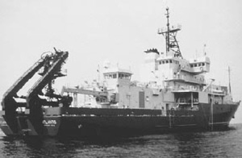

|  copyright - WHOI |
|
Atlantis replaced the Atlantis II and was named for WHOI's
original research vessel. She made her first call in home port on April
1997. The new Atlantis has advanced support facilities to service
and launch submersibles, such as Alvin, and a wide variety of ROVs
at locations throughout the global oceans. She is one of the most
sophisticated research vessels afloat, equipped with precision navigation,
bottom mapping, and satellite communications systems.
Atlantis is owned by the US Navy and operated by the Woods Hole
Oceanographic Institution in support of the US academic ocean research
community.